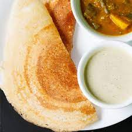

Dosa Recipe

What is this 'Dosa'?
Dosa is the ever-popular South Indian breakfast of crispy crepes made with
ground rice and lentil batter that is fermented. With just a handful of
ingredients learn to make the classic Dosa recipe from scratch
Ingredients
- 3/4 cup Parboiled Rice (idli-dosa rice)
- 3/4 cup Regular Rice
-
1/2 cup Whole Urad Dal (without skin) or Split Urad Dal (black lentils)
- 1/4 teaspoon Fenugreek Seeds (methi dana)
- 1/2 tablespoon Chana Dal (gram lentils), optional
- Water, as needed
- Salt to taste
- Oil, for shallow frying